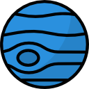

10 Januari 2022
Merkurius
Merkurius adalah ia mempunyai jarak dengan Matahari sekitar 58 Juta kilometer. Waktu rotasinya adalah 59 hari dan waktu revolusinya 88 hari.Suhu planet yang menghadap Matahari mencapai 430 derajat celsius dan bagian yang membelakangi Matahari bersuhu 180 derajat celsius. Merkurius memiliki diameter sekitar 4.879 kilometer
KEMBALI

10 Januari 2022
Venus
Venus adalah ia mempunyai jarak 108 Juta kilometer dari matahari. Waktu rotasinya adalah 243 hari dan waktu revolusinya 225 hari.Suhu rata-rata planet venus adalah 462 derajat celsius. Diameter Venus sekitar 12.104 kilometer.
KEMBALI

10 Januari 2022
Bumi
Bumi adalah ia mempunyai jarak dengan Matahari sekitar 150 Juta kilometer. Waktu rotasinya adalah 24 jam dan waktu revolusinya 365 hari.Suhu rata-rata Bumi sebenarnya adalah 15 derajat celsius, tetapi terasa lebih panas, yakni 33 derajat celsius. Bumi memiliki diameter 12.742 kilometer.
KEMBALI

10 Januari 2022
Mars
Mars adalah ia mempunyai jarak 218,54 Juta kilometer dari matahari. Waktu rotasinya adalah 25 jam dan waktu revolusinya 687 hari. Planet mars memiliki diameter sekitar 6.779 kilometer. Rata-rata suhu Mars adalah 13,85 derajat celsius.
KEMBALI

10 Januari 2022
Jupter
Jupiter adalah ia mempunyai jarak dengan Matahari sekitar 776,43 Juta kilometer. Waktu rotasinya adalah 10 jam dan waktu revolusinya 11 tahun. Suhu rata-rata permukaan Jupiter adalah -108,15 derajat celsius. Diameter Jupiter adalah 139.820 kilometer.
KEMBALI

10 Januari 2022
Saturnus
Saturnus adalah ia mempunyai jarak 1,4 miliar kilometer dari matahari. Waktu rotasinya adalah 11 jam dan waktu revolusinya 29 tahun. Planet Saturnus memiliki diameter sekitar 116.460 kilometer. Rata-rata suhu Saturnus adalah -139,15 derajat celsius.
KEMBALI
10 Januari 2022
Uranus
Uranus adalah ia mempunyai jarak dengan Matahari sekitar 2,9 miliar kilometer. Waktu rotasinya adalah 17 jam dan waktu revolusinya 84 tahun. Suhu rata-rata permukaan Uranus adalah -224,15 derajat celsius. Diameter Uranus adalah 50.724 kilometer.
KEMBALI

10 Januari 2022
Neptunus
Neptunus adalah ia mempunyai jarak 4,4 miliar kilometer dari matahari. Waktu rotasinya adalah 16 jam dan waktu revolusinya 165 tahun. Planet Neptunus memiliki diameter sekitar 49.224 kilometer. Rata-rata suhu Neptunus adalah -214 derajat celsius.
KEMBALI
Copyright © tedy Xsvs 2021